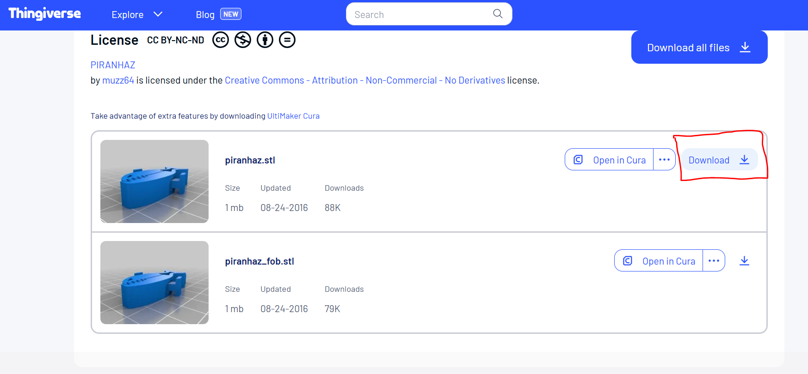

In this chapter you will be guided through your first printing experience!
>
Chapter 1: Get your 3D Model
To test your skills and provide you with hands-on experience, you will print your first model:
The Piranha. Don’t worry — all instructions will be provided!
Navigate to the model: Visit
PIRANHAZ
(opens in a new tab).
Download the STL file: Scroll down and locate the two STL files.
Download the first file as shown below:

Locate the file: You should now see the file in your Downloads folder on your
desktop.
>
Chapter 2: Sclicing your model
Preparing Your Model for Printing
Now that you’ve downloaded your model, it’s time to import it into your slicer and prepare it for printing.
Preparation: If you don’t already have Bambu Studio, you can download it
here.
It’s also recommended to review the “3D Printer” chapter in advance.
Open Bambu Studio.
Import your model: Go to File > Import and select your downloaded STL file.
Set your parameters: Choose the correct settings such as layer height, infill density, and
supports.
Final Check: Make sure the print preview looks correct, the model is placed on the bed
properly, and all settings are accurate.
Your model is now ready for printing! The next chapter will walk you through the actual print process.
>
Chapter 3: Preparing Your Printer for the Print
Before you can start your print, it’s important to ensure your Bambu Lab A1 Mini is properly
prepared.
This includes basic setup, maintenance checks, and confirming the connection between your slicer (Bambu
Studio) and the printer.
Power on and update firmware:
Make sure the printer is plugged in and turned on. Check for any available firmware updates via the
touchscreen interface.
Load filament:
Use the automatic filament loading system. Insert the filament into the AMS unit (if available) or directly
into the extruder.
Follow on-screen prompts on the printer’s display.
Level the bed:
The Bambu Lab A1 Mini features automatic bed leveling. You can initiate this from the printer menu under
"Prepare > Level Bed."
It’s recommended to perform this before your first print or after moving the printer.
Check Wi-Fi or USB connection:
Ensure the printer is connected to the same Wi-Fi network as your computer for seamless slicing and remote
printing.
Alternatively, use a microSD card or USB drive to transfer the sliced file.
Preheat if necessary:
While Bambu Studio will typically handle this, you can manually preheat the nozzle and bed if needed via the
touchscreen.
Double-check materials and bed:
Confirm that:
The filament is loaded and extruding correctly
The print bed is clean and free of debris
You’re using the correct build plate for your material type
Once your printer is ready and connected, you can move on to sending the file from Bambu Studio and starting
the print!
>
Chapter 4: Printing & Refining
This is the content for Subchapter 3.
>
Chapter 5: No Printer available? Try it with our AR 3D Printer Simulation
Try it yourself!
Want to walk around the printer virtually and learn setup steps interactively?
How to use
Print the included Hiro MarkerA Hiro marker is a
black-and-white square used in AR (Augmented Reality) to help cameras recognize position and
orientation in 3D space.
Place the marker on a flat surface
Open the app and point your camera at the marker
Explore, tap the 3D buttons, and simulate a 3D print!
Download here
(Android
only) or scan the QR Code on the right on your phone directly
Preview
Here is a demo of the AR app with all its features!